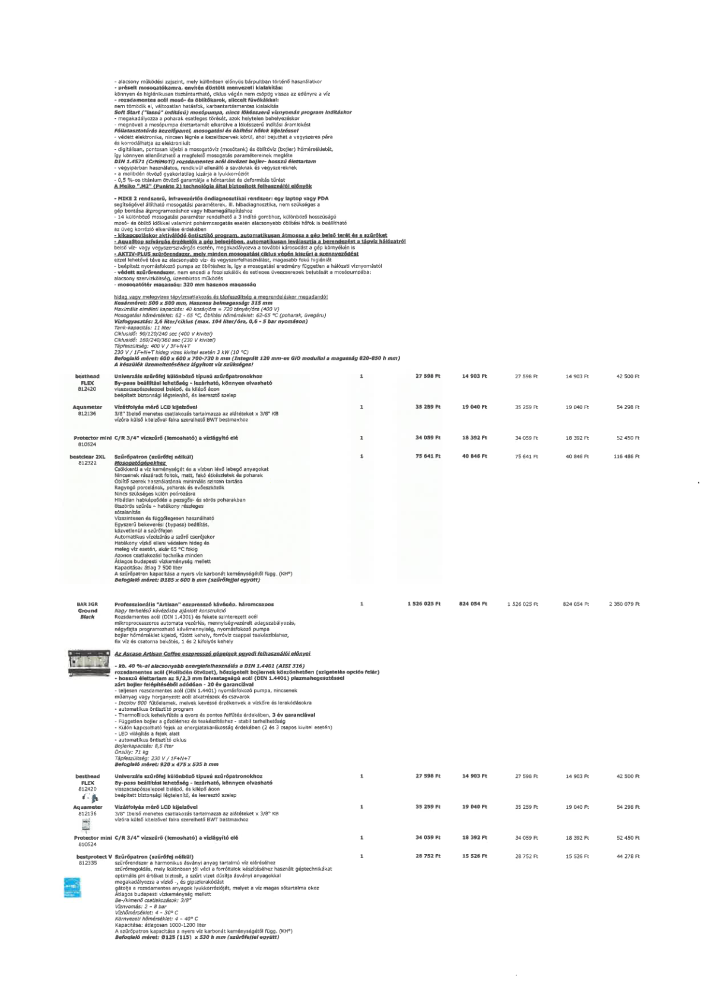

| Tétel | Menny. | Egys. | Anyag e.ár (net HUF) | Díj e.ár (net HUF) | Anyag összesen (net HUF) | Díj összesen (net HUF) | Anyag+Díj összesen (net HUF) |
|---|---|---|---|---|---|---|---|
| besthead FLEX 812420 Univerzális szűrőfej különböző típusú szűrőpatronokhoz | 1 | NaN | 27 598 | 14 903 | 27 598 | 14 903 | 42 500 |
| Aquameter 812136 Vízátfolyás mérő LCD kijelzővel | 1 | NaN | 35 259 | 19 040 | 35 259 | 19 040 | 54 298 |
| Protector mini C/R 3/4" vízszűrő (lemosható) a vízlágyító elé 810524 | 1 | NaN | 34 059 | 18 392 | 34 059 | 18 392 | 52 450 |
| bestclear 2XL 812322 Szűrőpatron (szűrőfej nélkül) | 1 | NaN | 75 641 | 40 846 | 75 641 | 40 846 | 116 486 |
| BAR 3GR Ground Black Professzionális "Artisan" eszpresszó kávégép, háromcsapos | 1 | NaN | 1 526 025 | 824 054 | 1 526 025 | 824 054 | 2 350 079 |
| besthead FLEX 812420 Univerzális szűrőfej különböző típusú szűrőpatronokhoz | 1 | NaN | 27 598 | 14 903 | 27 598 | 14 903 | 42 500 |
| Aquameter 812136 Vízátfolyás mérő LCD kijelzővel | 1 | NaN | 35 259 | 19 040 | 35 259 | 19 040 | 54 298 |
| Protector mini C/R 3/4" vízszűrő (lemosható) a vízlágyító elé 810524 | 1 | NaN | 34 059 | 18 392 | 34 059 | 18 392 | 52 450 |
| bestprotect V 812335 Szűrőpatron (szűrőfej nélkül) | 1 | NaN | 28 752 | 15 526 | 28 752 | 15 526 | 44 278 |
